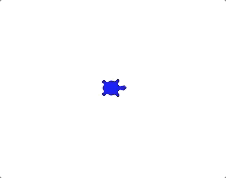
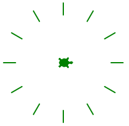
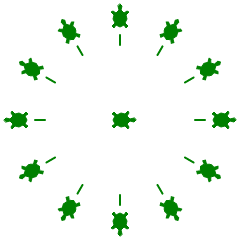

6.12. Project: Turtle Loops¶
Let’s use Python turtles to practice writing loops!
6.12.1. Part A - Polygons and Sprites¶
In the chapter, you coded a program to make a turtle draw a regular polygon (a shape with all the sides the same length and all the angles the same). Click on one of the links below to open up the starter code in repl.it or Trinket.
Example
1 2 3 4 5 6 7 8 9 10 11 | import turtle
bob = turtle.Turtle()
num_sides = 8
turn_angle = 360.0 / num_sides
for side in range(num_sides):
bob.forward(50)
bob.left(turn_angle)
|
Modify the program to prompt the user to enter the following:
- The number of sides for the polygon,
- The length for each side.
Tip
bob.color('blue')changes the color of the lines to blue. Many color choices are available. Feel free to play with this feature.You can also fill the polygon with a color. Refer to the Turtle Appendix for details.
A sprite is a spider shaped thing with a certain number of legs coming out from a center point.
Sprites with 3, 5, and 8 legs.¶
Write a program to draw a sprite, where the number of legs is provided by the user. The same
turn_anglecalculation applies for both sprites and polygons.Follow one of these links for the repl.it or Trinket starter code.
6.12.2. Part B - Clock Face¶
Entering a value of 12 for the number of sprite legs draws something that
looks a little bit like a clock face:
Add the
.penup()and.pendown()methods to your sprite loop to make the drawing look like this:Finally, use the
.stamp()method to make a mark at the end of each line. Your drawing should look something like this:
6.12.3. Part C - Nested Loops¶
Nested loops occur when one loop is placed inside of another. For one iteration of the outer loop, the inner loop completes ALL of its iterations.
Try It!
Run the program below and examine the output. Which print statements
belong to each loop?
What happens if you add a third loop inside the second?
Use a nested loop to draw three sprites in a row. The outer loop controls the number and position of the sprites. The inner loop draws each sprite.
Add the following outer loop code to your sprite program. The outer loop should come after your turtle setup and user input statements.
1 2 3 4 5 6
for sprite in range(3): turtle_name.penup() if sprite != 0: # If not the first sprite, move the turtle sideways. turtle_name.forward(leg_length*2.5) # Prevents sprite legs from overlapping. # Inner loop here.
For the inner loop, use your old sprite drawing code. Be sure to indent the correct amount!
Run your program to make sure it correctly draws 3 sprites in a row, each with the user selected number of legs.
Modify your program to prompt the user for the number of sprites to draw. As an extra touch, stamp the turtle shape in the center of each sprite.
6.12.4. Part D - Polygons With Sprites¶
Use what you learned in parts A - C to draw a polygon with sprites at each corner (called a vertex). Prompt the user to enter both the number of sides for the polygon and the number of legs for each sprite (these do NOT have to be the same value).
Copy the starter code from either repl.it or Trinket.
Examples
Here is a square with 8-leg sprites:
Feel free to experiment with the colors of the lines.
{kind=link}
6.12.5. Part E - Draw Something New¶
Your polygon code used the same turn angle each iteration.
Open a new file and paste in the original polygon loop code. Experiment with changing the number of sides and/or the value (or formula) for the turn angle. See what interesting shapes you can create.
Add comments to your code so your teacher and classmates can understand how your program works!
Note
You do NOT have to draw the shapes shown above. The goal in this part is for you to be creative and discover what you can make on your own!